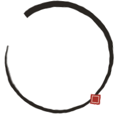

放映室
同一批騎乘資料，做了三支片。
← → 翻頁 F 全螢幕 P 自動放映左右滑動翻頁
鵜鶘騎單車
白鵜鶘戴著安全帽，把某一趟真實的逐秒功率騎一遍。旁邊半透明的，是自己的 PR 和上一次。
- 油門
- 真實 FIT 檔的逐秒功率
- 場景
- 大稻埕河岸、北海岸台 2 線
- 往下
- 八章數據，從「今天」讀到「紀錄」
十六分二十五秒
中社路長卷
從 38:01 騎到 16:25，花了一年追那時候的自己。一個人和一座山，用水墨的規則畫成長卷。
- 片長
- 約六分鐘，有聲音
- 地形
- 中社路 3.94 km，真實高程堆成 3D
- 筆畫
- 墨的粗細是當秒功率，鼓聲是那天的心跳

運動編年史
從 2025 年 4 月第一趟騎到今天，一個月一關的 16 位元橫向捲軸。
- 片長
- 約 100 秒，配樂當場合成
- 路
- 起伏是那個月騎了幾小時
- 金幣
- 一枚是一個路段 PR
- 資料
- Garmin FIT、intervals.icu、Strava 路段
- 引擎
- three.js、Canvas 2D、Web Audio
- 字體
- Noto Serif TC、霞鶩文楷、俐方體 11